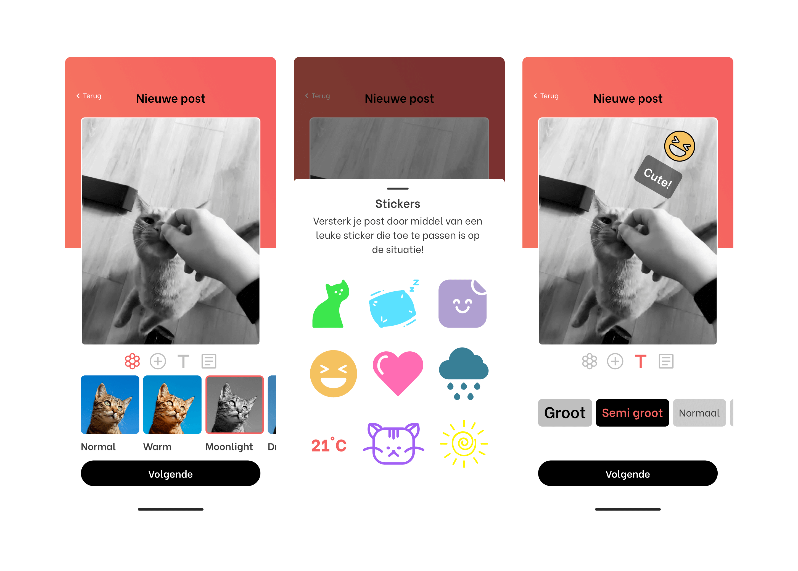
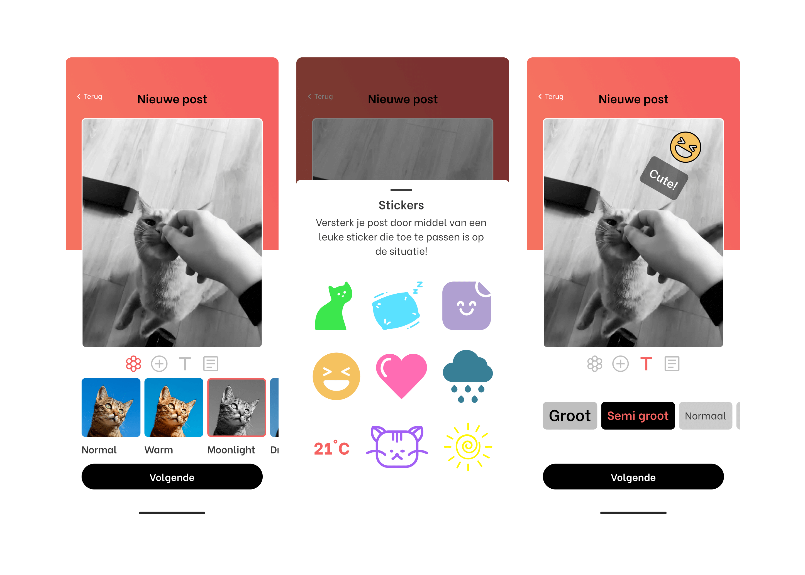

Purrfect Match
Purrfct Match was my graduation project. Purrfect Match is a platform where people can find their perfect match within an older cat, bases on their personality, as they get adopted less than kittens. People who can no longer take care of their older cat, can also upload a profile to find a good match for their cat.
- Year: 2023
- Client: Hva & Triple
- Role: UX & Visual Designer


 
